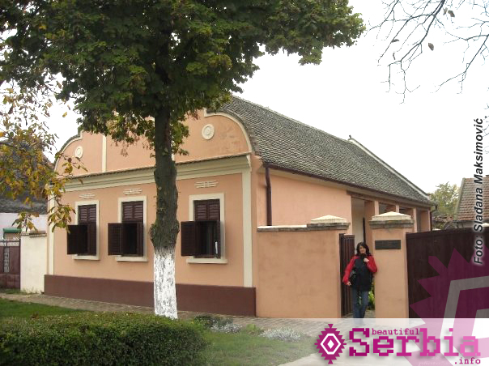

Early life and Education
Early life and education
Mihajlo Pupin ili punim imenom Mihajlo Idvorski Pupin (9. oktobar 1854[1][2] — 12. mart 1935) bio je naučnik, pronalazač, profesor na Univerzitetu Kolumbija,
nosilac jugoslovenskog odlikovanja Beli orao Prvog reda i počasni konzul Srbije u SAD.
Bio je i jedan od osnivača i dugogodišnji predsednik Srpskog narodnog saveza u Americi.
Takođe je dobio i Pulicerovu nagradu (1924) za autobiografsko delo „Od izbeglice do pronalazača“ (engl. From immigrant to inventor
States in America and PH.D
Mihajlo Pupin ili punim imenom Mihajlo Idvorski Pupin (9. oktobar 1854[1][2] — 12. mart 1935) bio je naučnik, pronalazač, profesor na Univerzitetu Kolumbija,
nosilac jugoslovenskog odlikovanja Beli orao Prvog reda i počasni konzul Srbije u SAD.
Bio je i jedan od osnivača i dugogodišnji predsednik Srpskog narodnog saveza u Americi.
Takođe je dobio i Pulicerovu nagradu (1924) za autobiografsko delo „Od izbeglice do pronalazača“ (engl. From immigrant to inventor
Osnovno obrazovanje Mihajlo je sticao najpre u svom rodnom mestu, u Srpskoj veroispovednoj osnovnoj školi, a potom u Nemačkoj osnovnoj školi u Perlezu.
Srednju školu upisao je 1871. godine u Pančevu prvo u Građanskoj školi, a potom u Realki.
Već tada se isticao kao talentovan i darovit učenik, i bio odličnog uspeha, zbog čega mu je dodeljena stipendija.
Stipendiju je dobio i zahvaljujući zalaganju prote Živkovića koji je u njemu prepoznao talenat vredan ulaganja.
Zbog njegove aktivnosti u pokretu Omladine srpske koja je u to vreme imala sukobe sa nemačkom policijom morao je da napusti Pančevo.
Godine 1872. odlazi u inostranstvo, u Prag, gde je, zahvaljujući stipendiji koju je primao iz Pančeva, nastavio šesti razred i prvi semestar sedmog razreda.
Nakon očeve iznenadne smrti, u martu 1874, u svojoj dvadesetoj godini života doneo je odluku da prekine školovanje u Pragu zbog finansijskih teškoća i da ode u Ameriku.
"Kada sam se iskrcao pre četrdeset i osam godina u Kasl Gardenu, imao sam u džepu svega pet centi.
I da sam umesto pet centi doneo pet stotina dolara, moja sudbina u novoj, meni potpuno nepoznatoj zemlji, ne bi bila ništa drukčija.
Mladi doseljenik, kao što sam tada bio ja i ne počinje ništa dok ne potroši sav novac koji je poneo sobom.
Ja sam doneo pet centi i odmah sam ih potrošio na jedan komad pite od šljiva, što je u stvari bila nazovi pita.
U njoj je bilo manje šljiva, a više koštica! A da sam doneo i pet stotina dolara, trebalo bi mi samo malo više vremena da ih utrošim, verovatno na slične stvari, a borba za opstanak koja me je očekivala ostala bi ista.
Za mladog doseljenika i nije nesreća da se ovde iskrca bez prebijene pare u džepu; za mladog čoveka uopšte nije nesreća biti bez novaca, ako se odlučio da sam sebi krči put samostalnom životu, pod uslovom da u sebi ima dovoljno snage da savlada sve teškoće sa kojima će se sukobiti
